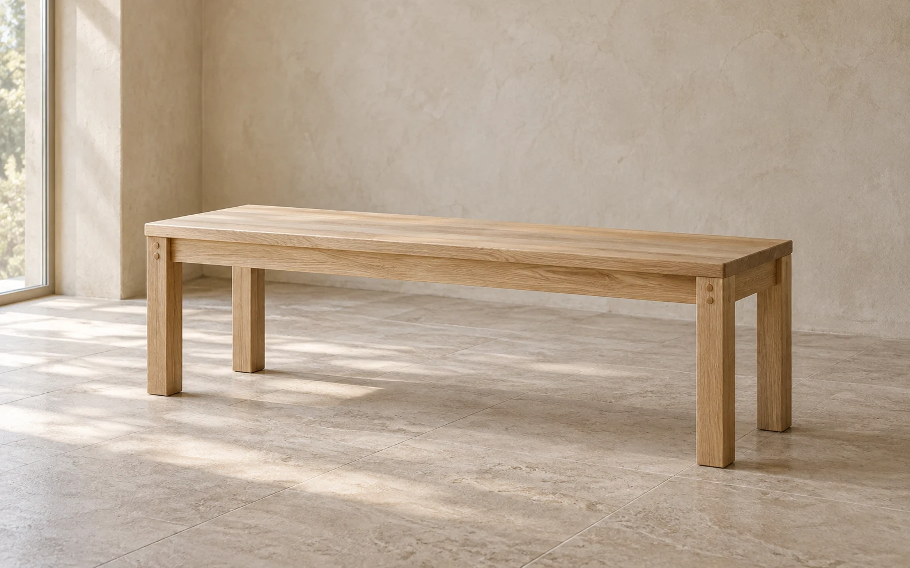
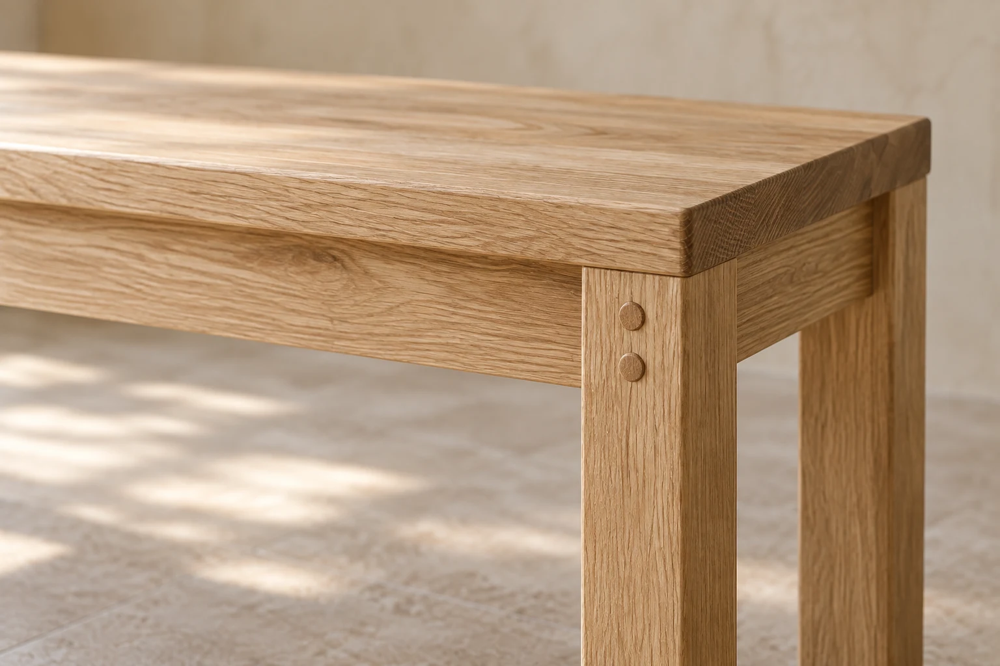
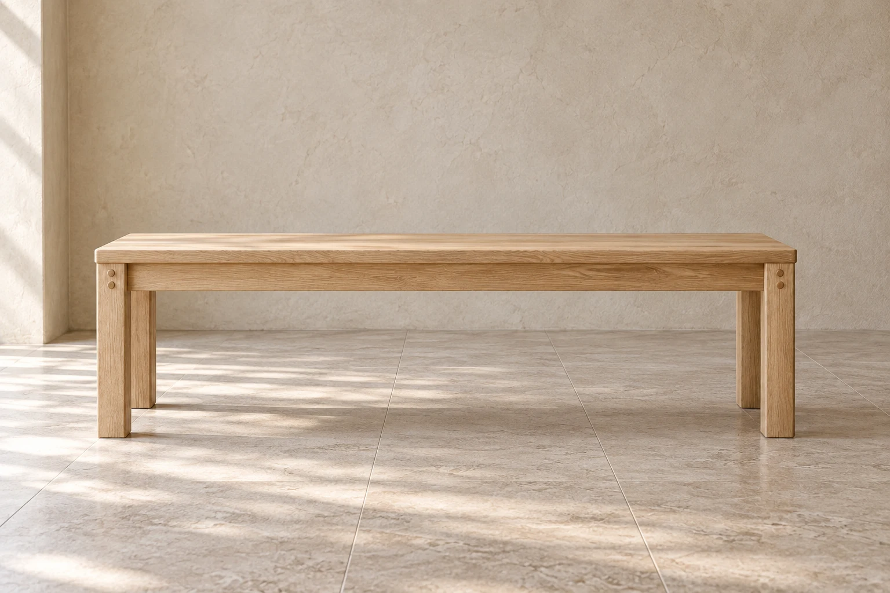

Alder Workshop / No. 01
Made to stay in use.
One oak bench. Repairable joints. Room for everyday life.
See dimensions and materials

Construction / 01
The joint is the detail.
The bench is imagined as a set of replaceable oak parts: a broad seat, four square legs and plain rails beneath. Wooden pins make the meeting points legible, so wear can be addressed at a joint rather than hidden under a permanent skin.
Its matte finish can be renewed as the surface gathers marks. The idea is a piece that can be taken apart, repaired and put back into daily use, with the construction left visible enough to understand.
A study in keeping things, not keeping them pristine.
Explore the particulars
Dimensions & materials
The particulars.
- Width
- 140 cm
- Depth
- 38 cm
- Height
- 45 cm
- Material
- White oak
- Joinery
- Repairable mechanical joints
- Finish
- Hardwax-oil finish
Care and repair
Wipe with a soft, barely damp cloth. Renew the hardwax-oil finish as the surface wears. Mechanical joints allow a worn part to be replaced.
Keep it in use.
A familiar object. A little attention. More years ahead.
A surface with a story.
Oak grows familiar through touch. A softened edge, a small mark, the changing grain in daylight: these are signs of a place in everyday life.
Wipe gently, dry the surface, and renew its oil when needed. Leave room for repair. A useful piece is one worth caring for.
Talk to the workshop